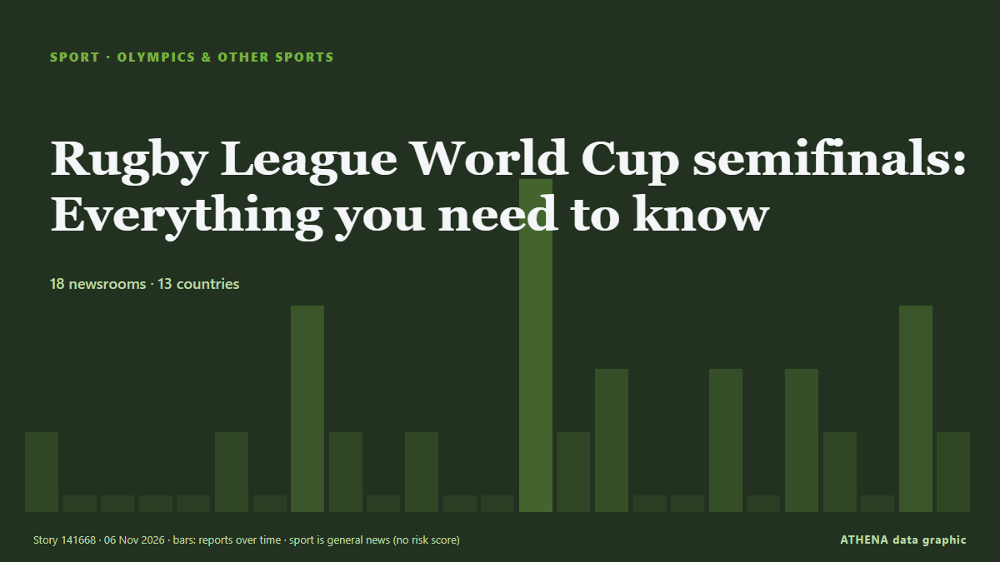

Olympia und weitere
GesponsertPräsentiert von  Cybernetics and Artificial Intelligence Lab Welcome to the Cybernetics and Artificial Intelligence Laboratory, established at the Department of Business Administration of the National and Kapodistrian University of Athens. The lab is headed by Professor Dimitrios Thomakos. The lab aims to do research that can be published in top venues. Our research uses tools and methods of Artificial Intelligence, and lies in the following areas: - Forecasting - Decision making - Cyber security - Finance We are always looking forward to collaborating with exceptional students!
Cybernetics and Artificial Intelligence Lab Welcome to the Cybernetics and Artificial Intelligence Laboratory, established at the Department of Business Administration of the National and Kapodistrian University of Athens. The lab is headed by Professor Dimitrios Thomakos. The lab aims to do research that can be published in top venues. Our research uses tools and methods of Artificial Intelligence, and lies in the following areas: - Forecasting - Decision making - Cyber security - Finance We are always looking forward to collaborating with exceptional students!
| 25. Okt. | 0 |
|---|---|
| 26. Okt. | 0 |
| 27. Okt. | 0 |
| 28. Okt. | 0 |
| 29. Okt. | 0 |
| 30. Okt. | 0 |
| 31. Okt. | 0 |
| 1. Nov. | 0 |
| 2. Nov. | 4 |
| 3. Nov. | 6 |
| 4. Nov. | 4 |
| 5. Nov. | 7 |
| 6. Nov. | 2 |
| 7. Nov. | 0 |
Schlagzeilen werden auf Englisch angezeigt, wie veröffentlicht.

Rugby League World Cup semifinals: Everything you need to know
The Kiwis and Kiwi Ferns face semifinal showdowns in Newcastle this Saturday. von RNZ Pacific
New star of Romanian swimming Daria Silișteanu wins second gold at Dakar 2026 Summer Youth Olympic Games
Romanian 17-year-old swimmer Daria Silișteanu won another gold medal at the Youth Olympic Games in Dakar (Senegal) on Thursday, November 5, in the 50-meter backstroke event. von Romania Insider
McIlroy gets 2-shot penalty in first-round 70 in Abu Dhabi as Laporta leads with a 62
Rory McIlroy received a two-shot penalty in the Abu Dhabi Championship, leaving him eight shots behind leader Francesco Laporta. von Arab News
Olympic champion Khelif to make professional boxing debut in Paris on December 15
The 27-year-old Algerian Olympic welterweight gold medalist will fight Clarida Sarabia in a super-welterweight bout after over two years away. von Sportstar
Iran women make history at 2026 Asian Team Squash Championships
Iran’s women’s national squash team made history by defeating host nation Pakistan 2–1 to claim their first-ever bronze medal at the Asian Team Squash Championships. von Tehran Times
Australia appoint Mike Hussey as consultant for Ashes and Cricket World Cup
Hussey, known as 'Mr Cricket' for his technical expertise, will also work with Australia during the LA 2028 Olympics. von Al Jazeera English
Australian T20 star Chris Lynn banned for cocaine use
Chris Lynn confirmed he had used cocaine “during a period of several hours across the evening of 15 July 2026 and into the early hours of 16 July 2026”. von Stuff
India vs Nepal, Men’s U19 Asia Cup: Squads, live streaming info — all you need to know
Here’s everything you need to know about the Under-19 Asia Cup clash between India U-19 and Nepal U-19 in Muscat on Friday. von Sportstar
LIV Golf league to shut down after five years
BC Partners reportedly walks away after player exodus LIV set to appear at bankruptcy hearing on Thursday The rebel LIV Golf tour’s attempt to relaunch itself after filing for bankruptcy has… von Guardian Business
CSK, SRH complete four-player trade ahead of IPL 27; Livingstone, Khaleel switch teams
Chennai Super Kings and Sunrisers Hyderabad have made headlines with a notable four-player trade for IPL 2027. von Times of India
India beat Pakistan 3-2 in SAFF Championship 2026
Dubai: India survived a late Pakistan fightback to secure a 3-2 victory in their opening Group B match of the SAFF Championship 2026 at the National Stadium in Dhaka on Thursday. von Gulf News
Egypt’s Sondos Sonbol Wins Historic Wushu Gold Medal at Dakar 2026 Youth Olympics
Egyptian wushu kung fu athlete Sondos Sonbol made history on Tuesday, 3 November, after winning gold in the women’s Changquan combined event at the Dakar 2026 Youth Olympic Games in Senegal, becoming… von Egyptian Streets
Afghanistan vs Zimbabwe LIVE score, 1st Test Day 1: Commentary, Updates
Bongani Ndlovu, bongani.ndlovu@chronicle.co.zw BRIAN Bennett says captaining Zimbabwe in Test cricket for the first time is a childhood dream come true as… von The Herald
#SHOWBIZ: Minho of Shinee apologises for recent marathon 'blunder'
SEOUL: Shinee member Choi Minho apologised last Tuesday after footage from his first full marathon sparked debate over whether he received prohibited physical assistance during the race. von New Straits Times
McIlroy backs claims LIV wanted to 'destroy' DP World Tour
Rory McIlroy backs DP World Tour CEO Guy Kinnings' comments saying that LIV Golf started with the intention of 'destroying' the former, as he welcomes a reset in men's golf. von Sky Sports
India vs Pakistan in Men’s ODI World Cup 2027 attract nearly 84 lakh ticket applications
India and Pakistan will face off on October 10 at Johannesburg’s Wanderers stadium in South Africa — a venue that has a capacity of just 34,000 spectators. von Sportstar
Jon Rahm makes his opinion clear about Yas Links ahead of Abu Dhabi Aldar Championship
Dubai: Jon Rahm has praised the condition of Yas Links after his first practice round ahead of the Abu Dhabi Aldar Championship, describing the course as one of the best he has encountered. von Gulf News
Qatar sends 15 buses to Senegal ahead of Dakar 2026 Youth Olympics
With just days to go before the start of the Dakar 2026 Youth Olympic Games, 15 buses gifted by Qatar arrived in the Senegalese capital. von Africanews (English)
Jake Paul Faces MMA Star Cedric Doumbe On Christmas Eve In Dubai
Jake Paul will fight French mixed martial artist Cedric Doumbe in Dubai on Christmas Eve as the American makes his comeback after a year out. von The National